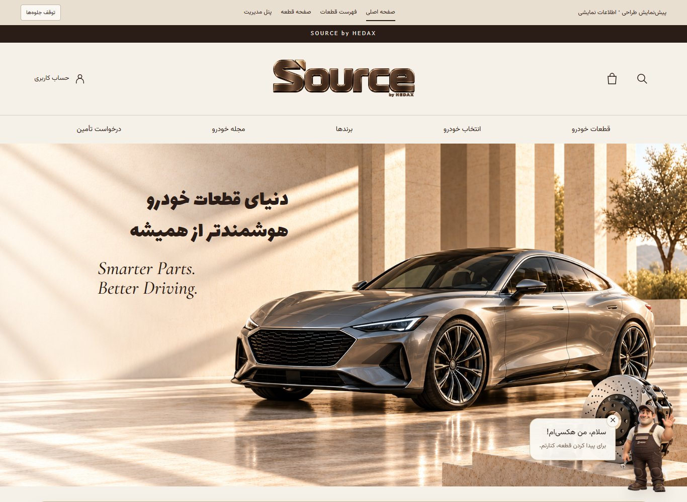
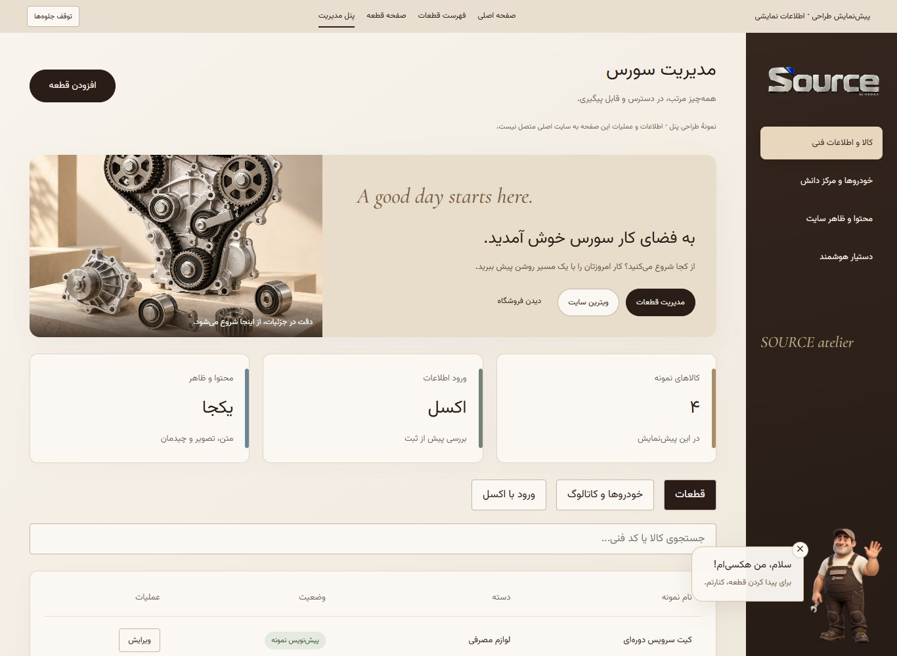
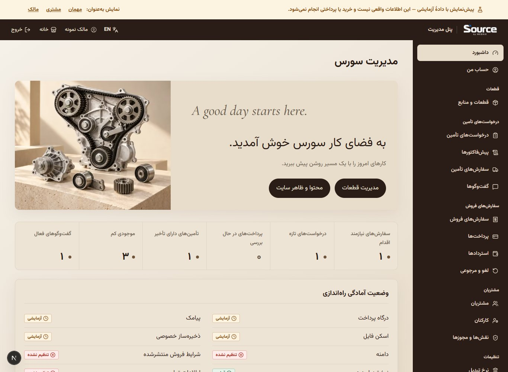

ستون راست پیشنمایش گفتگو و ستون چپ برنامهٔ واقعی با دادهٔ fixture است. محصولات، آمار و فرمها در اجرای واقعی از کامپوننتهای موجود میآیند. قلم عمومی Montserrat است؛ بنر قلم برنامهنویسی و تأکیدهای انگلیسی قلم نمونهٔ اولیه را دارند.


